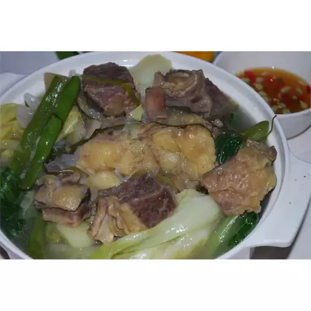

Beef Nilaga
Beef nilaga is another one-meal-in-a-pot dish that's terrific during cooler weather. It contains soup, meat, and vegetables all cooked together in one delicious broth. Serve hot, either alone or with rice.
Ingredients
- 4 1/2 pounds beef short ribs
- 1 quart water
- 2 onions, chopped
- 1 tablespoon black peppercorns, crushed
- 2 beef bouillon cubes
- 2 potatoes, quartered
- 1 chayote quash, peeled and quartered
- 2 carrots, cut into chunks
- 2 stalks celery, quartered
- Salt to taste
- 1/4 head cabbage, cut into wedges
Directions
- Place short ribs into a large pot with enough water to cover. Bring to a boil over high heat, then boil for 5 minutes; the ribs will not be fully cooked. Drain and discard cooking water.
- Return ribs to the pot. Pour in 1 quart water, then add onions, peppercorns, and bouillon cubes. Bring to a boil, then cover, reduce the heat, and simmer for 1 hour.
- Skim any fat floating on the surface. Stir in potatoes, chayote squash, carrots, and celery. Cover and simmer until potatoes are tender, about 20 minutes. Season with salt, then add cabbage and cook for 5 more minutes.
Home